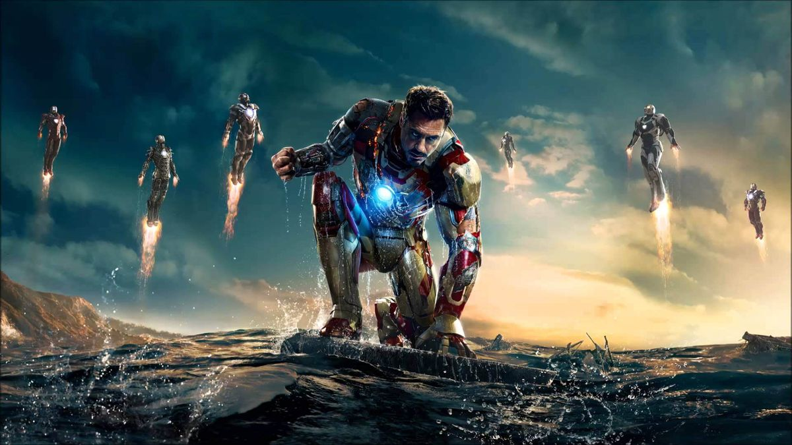
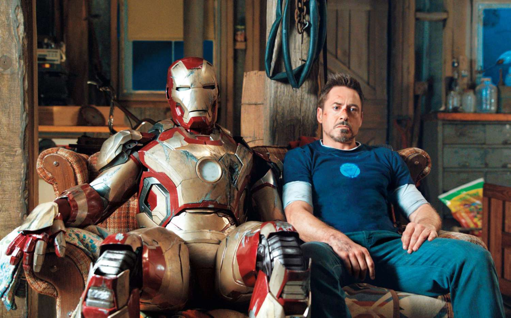
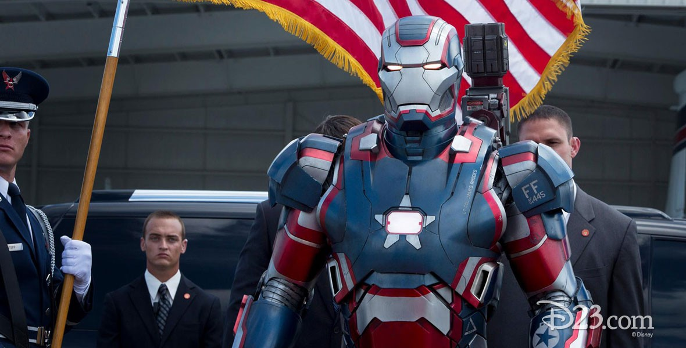
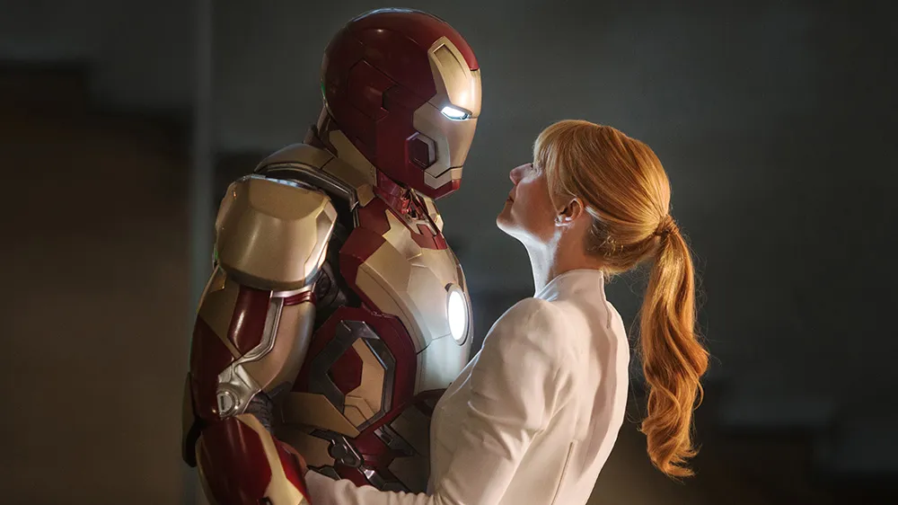

Plagued with worry and insomnia since saving New York from destruction, Tony Stark (Robert Downey Jr.), now, is more dependent on the suits that give him his Iron Man persona so much so that every aspect of his life is affected, including his relationship with Pepper (Gwyneth Paltrow).
After a malevolent enemy known as the Mandarin (Ben Kingsley) reduces his personal world to rubble, Tony must rely solely on instinct and ingenuity to avenge his losses and protect the people he loves.
   Cast: